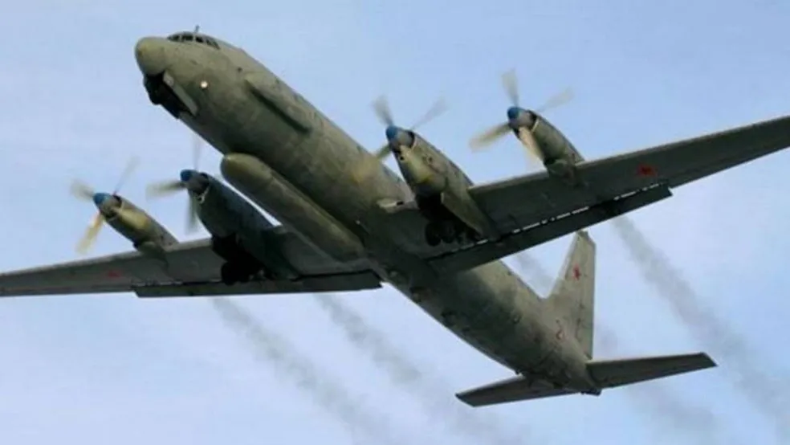

O motim do grupo Wagner resultou em perdas de aeronaves e soldados russos.
A s1 investigou informações sobre a queda de uma aeronave russa atribuída ao grupo Wagner.
Não há registros de incidentes envolvendo pilotos russos ou a destruição de aeronaves russas durante combates com o grupo mercenário Wagner no fim de semana. A s1 não encontrou informações sobre perdas militares da Rússia relacionadas a esse evento.
Não foram fornecidos detalhes pelo presidente Putin ou por Yevgeny Prigozhin sobre vítimas ou aeronaves perdidas.
As autoridades ucranianas não relataram destruição de helicópteros russos ou de qualquer outra aeronave durante a suposta rebelião no sábado.
Não há confirmação de avião militar derrubado perto de Kantemirovka nem de destroços identificados como sendo de um Ilyushin Il-22 ou de qualquer outra aeronave da Força Aérea Russa.
Não há informações sobre helicópteros Mi-8 ou KA-52 acidentados ou destruídos durante esse período.
Não há confirmação oficial de vítimas fatais entre os funcionários do Kremlin ou entre os combatentes do grupo mercenário Wagner. Prigozhin afirmou que várias pessoas ficaram feridas, mas nenhum combatente do Wagner morreu.